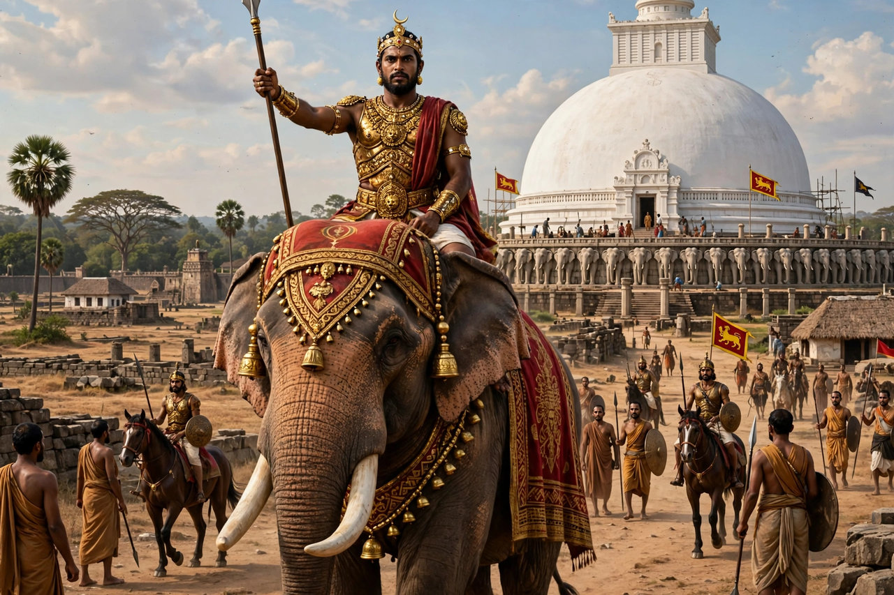

Dutugamunu (Sinhala: Duṭugæmuṇu), also known as Dutthagamani Abhaya, was a Sinhalese king of Anuradhapura who reigned from 161 to 137 BCE and is celebrated for defeating the Tamil ruler Elara and uniting Sri Lanka.
Son of Kavantissa of Ruhuna, Dutugamunu — per the Mahavamsa and Culavamsa chronicles — marched north, defeated Elara at Vijithapura and Anuradhapura, and honoured his fallen rival with a tomb. He is said to have fought with a relic of the Buddha in his spear.
He built the great Ruwanwelisaya (Mahathupa) and Mirisawetiya stupas and the Lovamahapaya at Anuradhapura. He remains a hero of Sinhala Buddhist tradition, a legacy also invoked in modern times including during the Sri Lankan civil war.